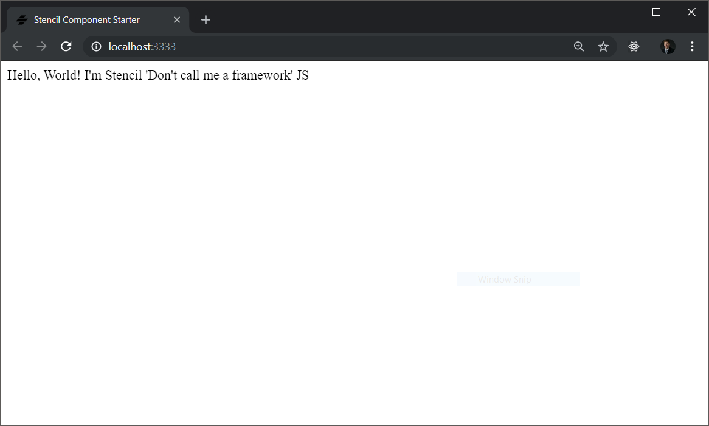
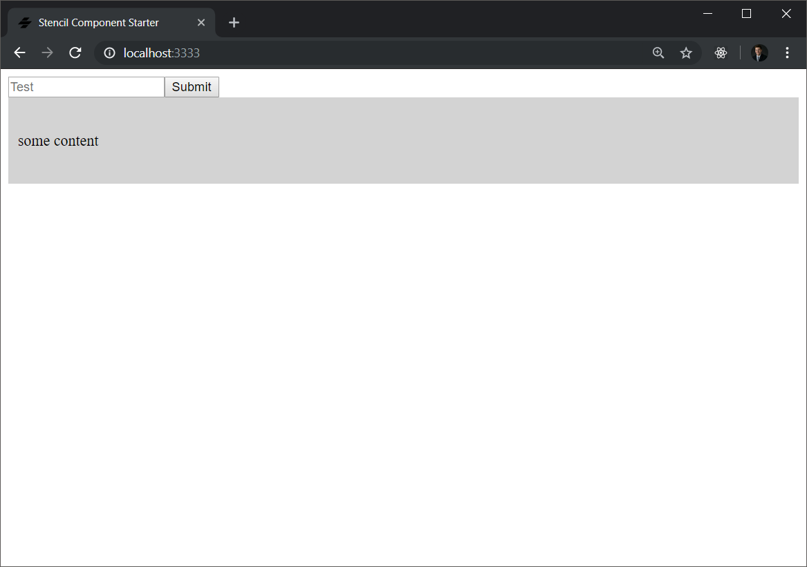
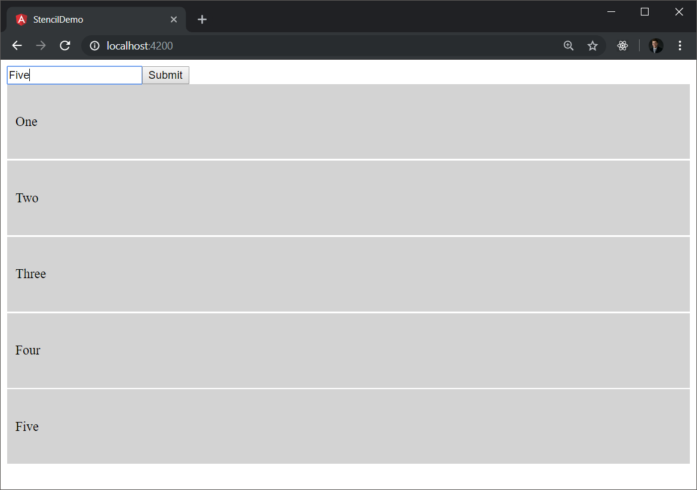

At this point in time, it seems that in the frontend engineering space there are two choices that development teams consider when taking on a project, React or Angular. There are other frameworks thrown into the mix: Vue, AngularJS, Preact and Surplus just to name a few. However, Angular and React largely dominate the space. With their co-existence also brings unwavering opinions about which one is better. An important question must be posed, what actually makes one better than the other?
In my opinion, the answer to our posed question is simply that a developer prefers one over the other. Frankly, both React and Angular give you the ability to do the same thing, create progressive web applications. Angular is written in typescript and comes with more things out of the box, like a or an http request client. While React uses JSX, is only the component layer of web applications, and needs packages added to it in order to create complete PWA's. Mainly I suppose the differentiator is that Angular persuades you to use some of it's out of the box features, like it's router (even though you can still change it), while React doesn't care and forces you to make those design decisions yourself.
If there is anything I have gathered, there is one main point that developers like to harp on. Some like writing components with Angular's code and template model, while others like writing components with JSX where the component logic as well as the html markdown is all encapsulated in one file. Admittedly, I am an Angular developer. That being said, I see the reason why people like writing components in JSX. Having everything that a component needs sitting in one file increases readability, and promotes the idea of web components being reusable at the code level (meaning that you can take a singular JSX file anywhere in a react project and have a working web component). So let's ask a different question, is there a way we can use Angular's routing, http provider, dependency injection and all the things developers love about angular, while writing our components in a React like fashion with JSX? More over, what if we could write JSX web components and reuse them anywhere, regardless of Framework? Enter StencilJS.
Stencil takes all the good features from multiple frameworks, like Typescipt, JSX, Reactive data-binding etc and provides a library that allows a developer to write code that looks a lot like React which compiles down to standards-based web components. These web components, more specifically called custom elements, can be used across multiple frameworks. Moreover, they can be used without a framework altogether since they are compiled to a the ECMAScript standard, allowing them to be used just like any other html tag.
I find this to be rather ironic. The framework with the worst support for using standards-based web components is React. This is for two reasons; React doesn't like passing non-primitive data in to props of custom elements, and React cannot listen for DOM events coming from custom elements because it has it's own synthetic event system. Unfortuneatly, this is a huge limiting factor for using Stencil with React, and simply makes it not a wise design decision as of today. See more on framework support here: https://custom-elements-everywhere.com.
We set up a scenario in the section Scoping the Preference Discussion Down where we, as a developer, want to use Angulars features while being able to write components using JSX and look like react. With StencilJS, we are able to do so. In this post we are going to go over how to create stencil components for a task-list application, show how to publish those components as a npm package, and finally demonstrate how to use those Stencil components in an Angular application.
You probably can guess it. For this example I am using Visual Studio Code.
Not that it matters a whole lot, but I am using a Windows computer to do this development. However, I am using an Ubuntu installation in Window's Subsystem for Linux, and only point this out because I think WSL is awesome and recommend the reader to look into it if developing on Windows.
It is worth installing the stencil-snippets (fdom.stencil-snippets) plugin. It will give you some boiler plate code for creating your stencil files. Stencil has nothing like the Angular CLI that generates files for you.
To globally install stencil, type the following in a terminal
npm install -g @stencil/core@latest
CD into the directory you want your stencil project to live. Once there, type the following command into a terminal window.
npm init stencil
You will be given some options for setting up the project. Select component from the list to create a new component collection.
? Pick a starter › - Use arrow-keys. Return to submit.
ionic-pwa Everything you need to build fast, production ready PWAs
app Minimal starter for building a Stencil app or website
❯ component Collection of web components that can be used anywhere
Finally, specify a name for the project. In this case, I am using my-bulletin-components. Note that you should name your's something different, as NPM won't let you publish a package with the name I am using since I have already done so.
Pick a starter › component ? Project name › task-list-stencil-demo
At this point, Stencil will let you know that the project has been created. Go ahead and CD into the project.
CD into your project folder (where package.json lives) and run the following command in a terminal.
npm install
This will install all the neccissary project dependencies for your Stencil project to run.
Finally, run the Stencil app with the following command in a terminal window.
npm start
This will open a chrome window and show you the initial state of the project.

Open the file src/component/my-component/my-component.tsx
import { Component, Prop, h } from '@stencil/core'; import { format } from '../../utils/utils'; @Component({ tag: 'my-component', styleUrl: 'my-component.css', shadow: true }) export class MyComponent { @Prop() first: string; @Prop() middle: string; @Prop() last: string; private getText(): string { return format(this.first, this.middle, this.last); } render() { return <div>Hello, World! I'm {this.getText()}</div>; } }
As you can see, Stencil writes a whole lot like react, and even uses the same terminology (like props). However it uses typescript, and has a @Component() decorator like in angular.
To change what we are seeing on the home page, inspect the src/index.html file. More specifically look in the body of the HTML file.
<body> <my-component first="Stencil" last="'Don't call me a framework' JS"></my-component> </body>
When we create our new stencil components, we can drop them into index.html where the my-component tag already exists.
Let's first clean up the application and delete the my-component folder. Also remove the line in index.html that uses the<my-component></my-component> tag.
Under ./src/components create a new folder called my-bulletin-add. In that folder, create a file called my-bulletin-add.tsx and another called my-bulletin-add.css. Open your .tsx file, and use that stencil-snippets extension to generate boilerplate code for a stencil component. To do this, begin typing st-component in your .tsx file. Note: You have to add h to the include statements to get everything to compile. Your starting component file should look like this.
import { Component, h } from '@stencil/core'; @Component({ tag: 'my-bulletin-add', styleUrl: 'my-bulletin-add.css' }) export class MyBulletinAdd { render() { return ( <p>My name is Stencil</p> ); } }
We are going to create a component that has a text-box input field. This component is going to have one prop, placeholderText. placeHolderText will be a string and determine what is the placeholder for the text box when it is empty (example: enter your name). We will need an event for when the user enters a phrase into the text box, so we can emit the value. Lastly, we are going to need some state in the component to keep track of what has been entered into the input form.
Defining the properties of the component is very much like defining @Inputs() in Angular. The form is @Prop() propname : sometype;. Remember to import Prop form @stencil/core. Add the following code to your my-bulletin.tsx file above the render method.
@Prop() placeHolderText: string;
Much like in Angular, Stencil makes use of an event emitter that creates a custom DOM event that can be captured by javascript. To create a new Event, import EventEmitter and Event from @stencil/core and add the following line of code underneath your props.
@Event() phraseEntered: EventEmitter;
Eventually we will use phraseEntered.emit() to trigger a DOM event.
We need to create some component state to keep track of what is currently entered into the form. To do so, import State from @stencil/core and add the following code. Remember to give your state an initial value (an empty string).
@State() formValue: string = '';
Let now create markdown for the component. Add the following code to your component in the render() function.
render() { return ( <form onSubmit={(e) => console.log(e)}> <div class="form"> <input class="add-field" placeholder={this.placeHolderText} type="text" value={this.formValue} onInput={(event) => console.log(event)} /> <input class="add-button" type="submit" value="Submit" /> </div> </form> ); }
Note that this.formValue binds our input form to the state of this component, and this.placeHolderText assigns our prop to the placeholder of our entry form.
Next lets add functions to deal with when the form input has changed (onInput) and when the form is submitted (onSubmit). Modify the code to look like the following.
handleChange = (event) => { this.formValue = event.target.value; } formSubmitted = (event) => { event.preventDefault() this.phraseEntered.emit(this.formValue); } render() { return ( <form onSubmit={(e) => this.formSubmitted(e)}> <div class="form"> <input class="add-field" placeholder={this.placeHolderText} type="text" value={this.formValue} onInput={(e) => this.handleChange(e)} /> <input class="add-button" type="submit" value="Submit" /> </div> </form> ); }
In the formSubmitted() function we emit an event that contains the data from our form with our phraseEntered event emitter. This create a dom event that we will be able to listen for later on in Angular which will handle the data and update the component we will create next.
This component will be a 'card' component that shows data (a string). This component will be used by our Angular applicaiton to show all the bulletin values that were entered in the my-bulletin-add component.
Create a folder called my-bulletin-item under ./src/components. In the folder create files called my-bulletin-item.tsx and my-bulletin-item.css. In your .tsx file, use the st-component snippet to generate boilerplate code for this component and remember to import h from @stencil/core.
This component will have one property called content. This represents the information we want to show in the component. Be sure to import Prop from @stencil/core Add the following to your .tsx file.
@Prop() content: string;
We want to show what has been passed in as content within a div. To do this, we create a div tag with a paragraph element as it's child and include our content prop as the inner-html contents. We also give the div a classname so we can apply some styling.
render() { return ( <div class="content-box"> <p>{this.content}</p> </div> ); }
For the sake of making things look nice, add the following styles to my-bulletin-item.css
.content-box { padding: 20px 10px; background-color: lightgray; }
Add the following to the body of the index.html file.
<my-bulletin-add place-holder-text="Test"></my-bulletin-add> <my-bulletin-item content="some content"></my-bulletin-item>
Serve the app using the following bash command.
npm start
The application at this point should look like this.

At this point, we have created two stencil components that we want to use in an Angular application. The angular app, will recieve values submitted through the my-bulletin-add component, add them to an array of strings (which represents our application state), then renders each string out in a my-bulletin-item component. The components are now done, and we have to publish them to NPM so we can pull the components into an angular project.
If you do not have one already, go to https://www.npmjs.com/ and create a new profile. This will allow you to publish pacakges to NPM and pull them into later project.
To login to NPM on your local machine, type the following in a terminal
npm login
To verify that you have successfully logged in to your NPM account, type the following in a terminal
npm whoami
Open ./stencil.config.ts and ensure it matches the following. Your namespace should be different than mine or else you can not publish since NPM requires unique namespaces.
import { Config } from '@stencil/core'; export const config: Config = { namespace: 'my-bulletin-components', outputTargets: [ { type: 'dist', esmLoaderPath: '../loader' }, { type: 'docs-readme' }, { type: 'www', serviceWorker: null // disable service workers } ] };
We need to build our component collection into a distribution. To do this, run the following command in a terminal.
npm run build
This will generate minified javascript in ./dist that will ultimately be deployed. The output of the build should look something like the following.
> task-list-stencil-demo@0.0.1 build /mnt/c/Users/dmorton/Documents/PD/stencil/task-list-stencil-demo > stencil build --docs [03:11.7] @stencil/core v1.4.0 💥 [03:14.9] build, task-list-stencil-demo, prod mode, started ... [03:15.0] transpile started ... [03:16.8] transpile finished in 1.81 s [03:16.8] type checking started ... [03:16.8] copy started ... [03:16.8] generate styles started ... [03:16.8] bundling components started ... [03:16.9] copy finished (0 files) in 106 ms [03:17.1] generate styles finished in 309 ms [03:17.2] created readme docs: my-bulletin-add [03:17.2] created readme docs: my-bulletin-item [03:19.6] bundling components finished in 2.79 s [03:20.4] type checking finished in 3.57 s [03:20.6] build finished in 5.64 s
Run the following command in a terminal.
npm publish
Congratulations! You have just published your Stencil components to NPM and they are ready to be used in an Angular application.
Outside of your stencil project, create a new angular project called stencil-demo using the following command.
ng new stencil-demo
Switch into the Angular project's directory
cd stencil-demo
Run a preliminary install to get everything to compile
npm install
Ensure the application runs with the following command
ng serve
We need to use NPM to install the package we just created and published. Remember that your package name will be different than mine, based on what you named your stencil project. In my case, the command would look like the following.
npm install --save my-bulletin-components
Add the CUSTOM_ELEMENT_SCHEMA schema to your app module. app.module.ts should look like the following.
import { BrowserModule } from '@angular/platform-browser'; import { NgModule, CUSTOM_ELEMENTS_SCHEMA } from '@angular/core'; import { AppRoutingModule } from './app-routing.module'; import { AppComponent } from './app.component'; @NgModule({ declarations: [ AppComponent ], imports: [ BrowserModule, AppRoutingModule ], providers: [], bootstrap: [AppComponent], schemas: [CUSTOM_ELEMENTS_SCHEMA] }) export class AppModule { }
A component collection built with stencil has a main function to load components from the collection. In main.ts, import defineCustomElements from your distro and call it as shown in the following snippet. Remember your package name will be different if you are following along.
import { enableProdMode } from '@angular/core'; import { platformBrowserDynamic } from '@angular/platform-browser-dynamic'; import { AppModule } from './app/app.module'; import { environment } from './environments/environment'; import { defineCustomElements } from 'my-bulletin-components/loader'; if (environment.production) { enableProdMode(); } platformBrowserDynamic().bootstrapModule(AppModule) .catch(err => console.error(err)); defineCustomElements(window);
At this point, we are all ready to start using our Stencil components within our Angular application.
We can now add the my-bulletin-add component to our angular application. Modify your app.component.html to look like the following.
<div class="main-app"> <my-bulletin-add place-holder="Enter an item here" font-size="12" (phraseEntered)="phraseEntered($event)"></my-bulletin-add> </div>
Define phraseEntered in app.component.ts. This captures the custom DOM event sent from my-bulletin-add and handles the data that was passed with it.
phraseEntered(event: CustomEvent) { console.log(event.detail); }
We want to store each of the phrases that are entered into the my-bulletin-add component. To do this, create a variable in app.component.ts called 'bulletins' that is an empty string array.
bulletins: string[] = [];
In phraseEntered(), instead of logging out to the console, add the string to the bulletins array.
phraseEntered(event: CustomEvent) { this.bulletins.push(event.detail); }
Now, we want to loop through each item entered through phraseEntered and create a my-bulletin-item for each. To do this, add the following to app.component.html
<div *ngFor="let s of bulletins" style="margin-bottom: 2px;"> <my-bulletin-item content="{{s}}"></my-bulletin-item> </div>
Overall, your app.component.ts should look like ...
import { Component } from '@angular/core'; @Component({ selector: 'app-root', templateUrl: './app.component.html', styleUrls: ['./app.component.css'] }) export class AppComponent { title = 'stencil-demo'; bulletins: string[] = []; phraseEntered(event: CustomEvent) { this.bulletins.push(event.detail); console.log(this.bulletins); } }
and your app.component.html should look like ...
<div class="main-app"> <my-bulletin-add place-holder="Enter an item here" font-size="12" (phraseEntered)="phraseEntered($event)"></my-bulletin-add> <div *ngFor="let s of bulletins" style="margin-bottom: 2px;"> <my-bulletin-item content="{{s}}"></my-bulletin-item> </div> </div>
You have successfully integrated stencil components into an Angular application.
